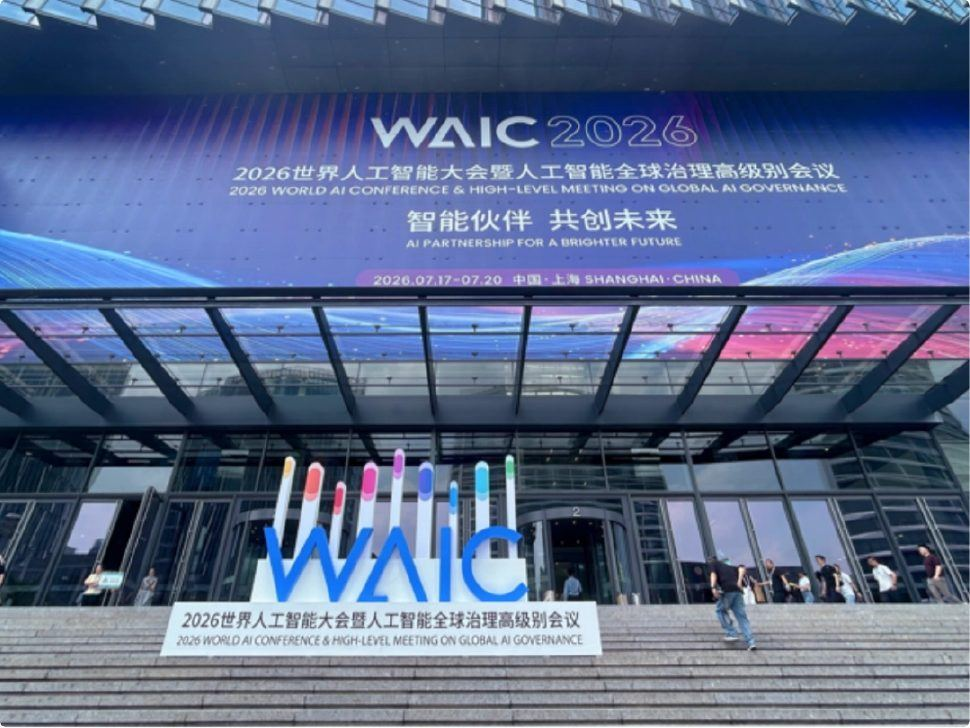
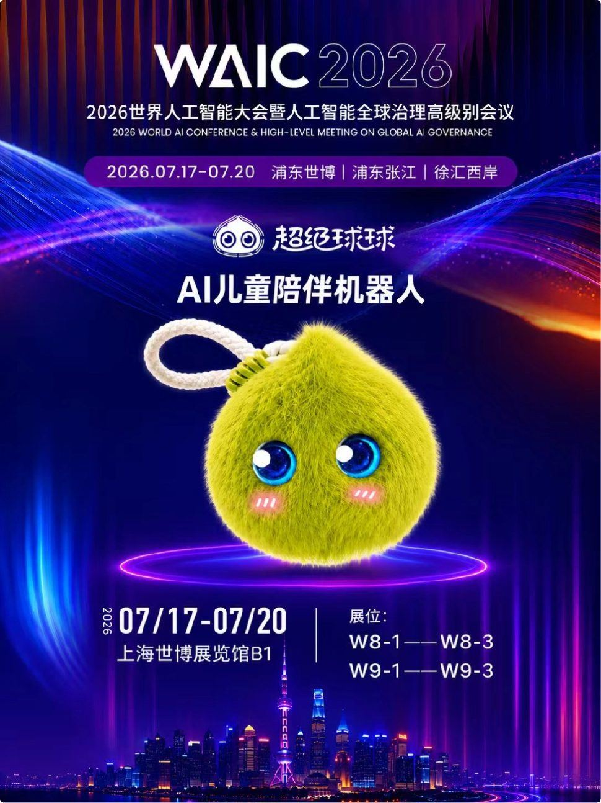
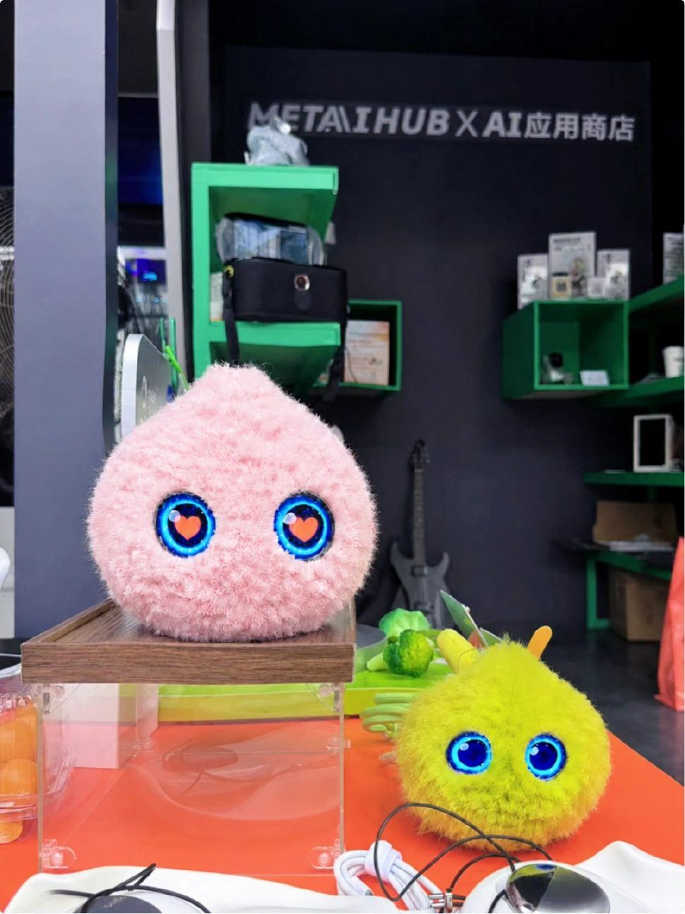
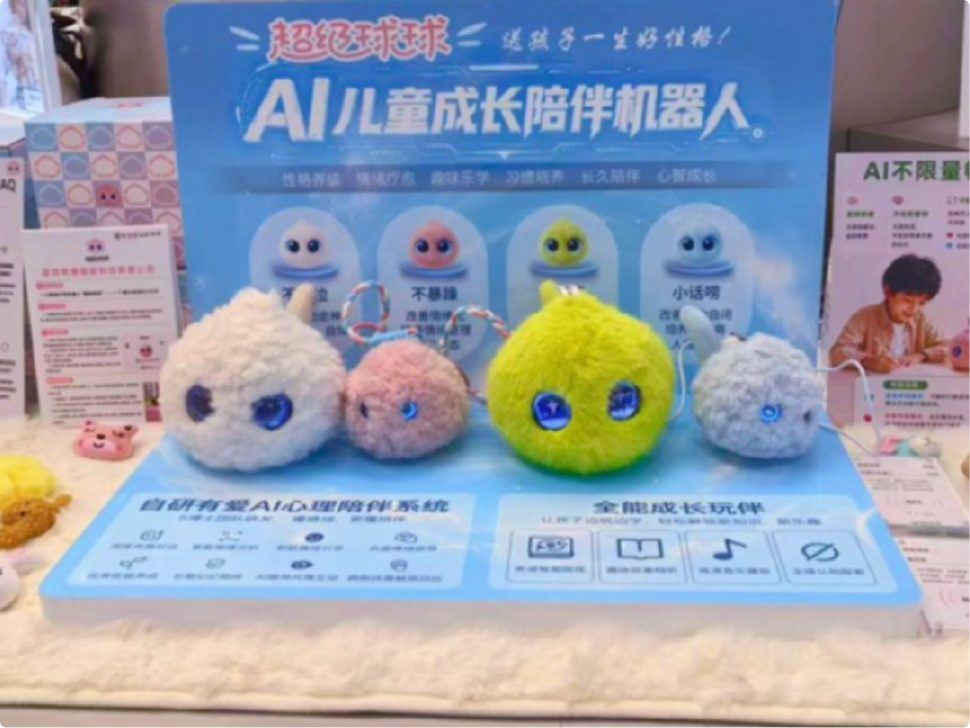
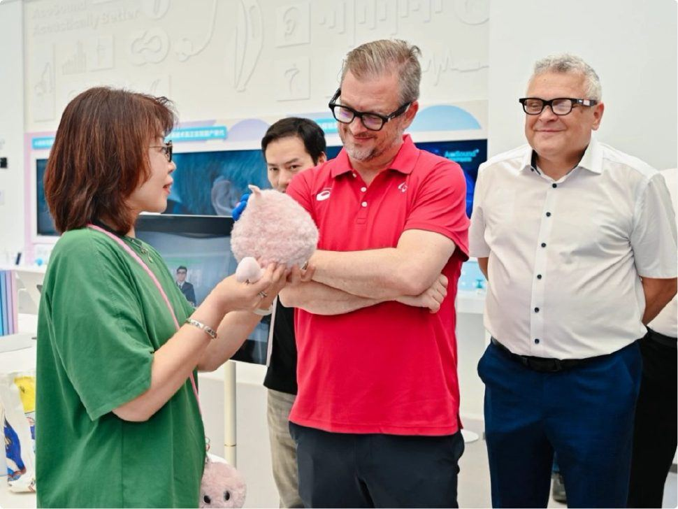
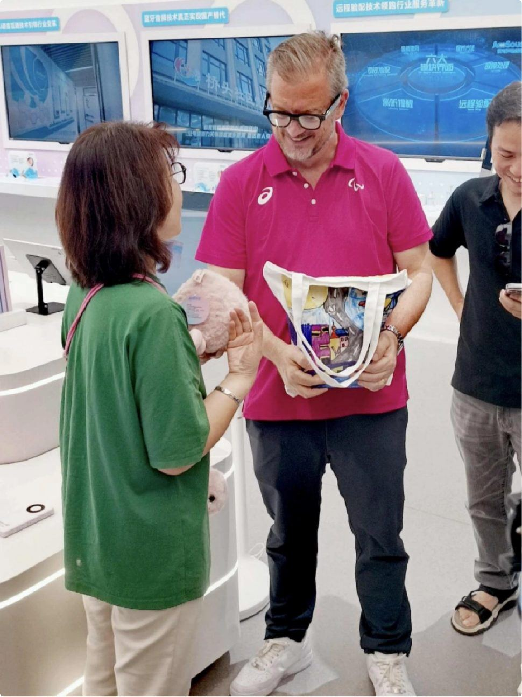
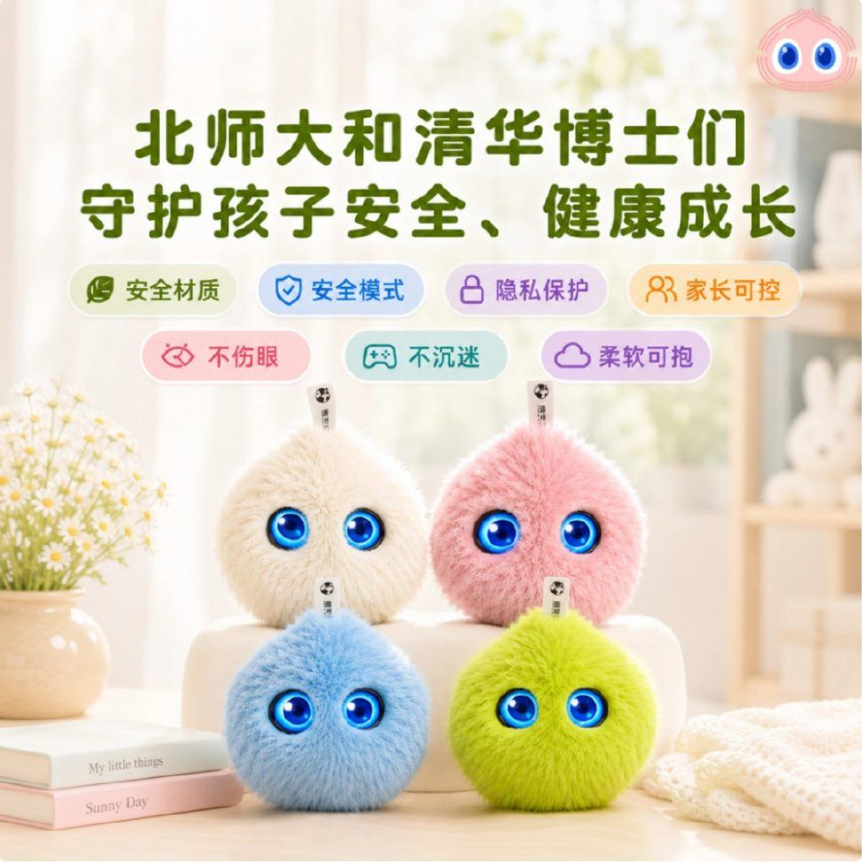
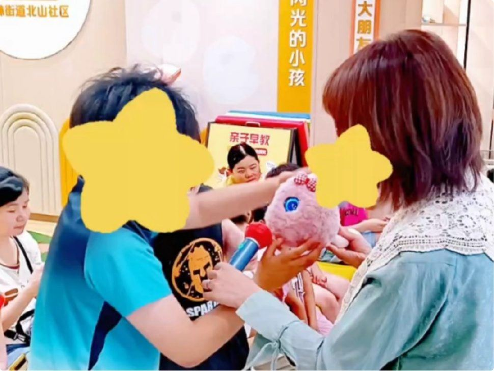
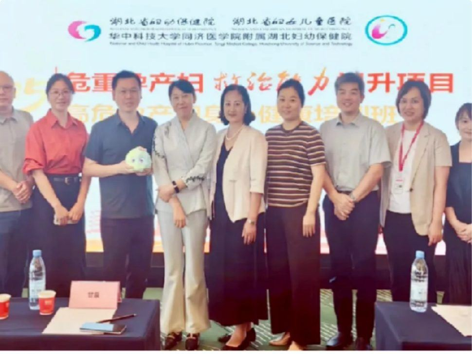
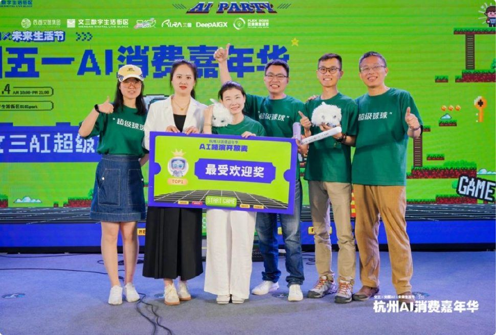

7月17日，2026世界人工智能大会（WAIC2026）在上海正式开幕。本届大会以“智联世界，生成未来”为主题，设立浦东世博、张江、徐汇西岸三大会场，汇聚全球AI龙头企业、科研专家、国际机构代表，集中展示人工智能赋能民生、教育、助残、医疗的前沿落地成果。

WAIC作为全球顶级AI行业盛会，参展产品需经过技术实力、社会价值、创新能力多重筛选。杭州超级有爱智能科技自研的AI儿童陪伴机器人“超级球球”，成功入选本届大会官方智能伙伴，进驻核心主场上海世博展览馆B1馆，展位W8-1至W8-3、W9-1至W9-3，展期持续至7月20日。
展会现场，超级球球全系列硬件、自研儿童情感AI系统同步对外开放，面向海内外政企嘉宾、行业客商，完整展示国内儿童心理陪伴AI的成熟落地方案。

现场人气拉满！各界嘉宾齐聚展位体验治愈系情感AI
开展四天以来，超级有爱展位成为儿童AI赛道热门打卡点，参会领导、教育从业者、助残机构负责人、海外科创客商纷纷驻足体验，现场交流氛围热烈。
工作人员现场演示超级球球全流程交互逻辑：无需唤醒词的语音对话、随情绪变化的灵动动态大眼、拥抱抚摸即可触发回应的毛绒触感交互，直观展现无屏幕智能硬件的独特优势。
不少一线幼教、特教老师上手实操后表示，当下儿童情绪疏导需求激增，但专业心理老师资源稀缺，这款轻量化AI陪伴设备能填补家庭、校园的心理陪伴空白；多位海外客商重点关注产品双语交互功能，现场咨询海外代理、技术合作、批量定制等落地模式。
一张张现场实拍照片记录下嘉宾体验产品、团队深度洽谈、行业同行交流技术的鲜活画面，直观展现情感AI赛道的市场热度。


聚焦儿童心理健康赛道，国际残奥委会主席实地考察点赞
儿童心理健康是当下全球共同关注的民生议题，超级有爱自创立之初便锚定这一细分赛道，将AI算法与专业儿童心理学深度结合，兼顾普通青少年、孤独症儿童、残障儿童、大病住院儿童多群体情绪陪伴需求，打造标准化AI心理疏导体系。
此前，国际残奥委会主席安德鲁·帕森斯（Andrew Parsons）专程到访余杭融爱中心，实地测评超级球球产品。互动过程中，超级球球全程使用英文完成自我介绍，清晰向主席演示倾听、共情、疏导、正向引导四大核心心理能力。针对主席提出的特殊儿童适配问题，公司销售总监高丽春详细介绍产品两大专项方案与常态化公益布局：针对孤独症儿童简化社交对话、弱化强光刺激，现已落地多个社区公益站点；针对住院患儿定制安抚音频，缓解就医焦虑；企业长期免费向特教机构、社区投放设备，补齐特殊儿童心理陪伴短板。

安德鲁·帕森斯提问超级球球
安德鲁·帕森斯主席对产品给予高度认可，他表示，残障、孤独症孩子普遍缺少稳定、包容的倾诉对象，超级球球提供了全天候无压力的情绪出口，是兼具技术创新与人文温度的科创成果。

安德鲁·帕森斯手持超级有爱长期帮扶的孤独症儿童原创手绘布袋
差异化赛道突围：无屏幕轻量化AI，做孩子专属心灵伙伴
和市面上主流带屏早教机不同，超级球球有着清晰差异化定位 - 无屏幕轻量化AI儿童情绪疗愈陪伴机器人，以毛绒软萌形态、纯语音交互打造低刺激、高安全的儿童陪伴终端。

超级球球经典款（大球）四款颜色全家福
在基础陪伴层面，产品采用亲肤环保毛绒面料，搭配动态眼神交互、触摸感应反馈，内置分龄故事、英语口语陪练、科普知识、助眠轻音乐等内容；依托云端长期记忆功能，记住孩子性格、喜好与心事，给出个性化引导，从根源规避屏幕蓝光损伤视力，解决家长对孩子沉迷电子产品的焦虑。
针对特殊儿童群体，产品专门优化交互逻辑：为孤独症儿童设计平缓重复的温和对话，降低社交恐惧；为长期住院儿童定制疗愈话术，舒缓分离焦虑。目前相关公益服务已在多地社区、特殊学校常态化落地，持续为特殊儿童提供免费心理陪伴。

2026年6月杭州，超级球球主持参与孤独症亲子线下活动 - 追星星的AI绘本融合活动

2025年12月湖北儿童福利院，超级球球参与“守护童心，照见自己”的心理健康知识讲座
企业简介
超级有爱（杭州）智能科技有限公司是深耕儿童情绪健康领域的原生AI科创企业，核心研发团队由清华、海外名校博士组成，拥有6年研发积淀、9代产品迭代经验，手握24项情感交互专利、IP形象版权等完整知识产权。全系列产品通过国家3C玩具强制认证、工信部SRRC无线电核准、华测全套安全检测，具备自研自产、规模化量产完整产业链。
企业坚持科技向善，一边持续迭代儿童心理AI算法，拓展母婴、教培、文创礼品、海外市场多元合作；一边落地公益帮扶项目，扶持孤独症青少年艺术创作，持续向特殊机构捐赠陪伴设备。此次登陆WAIC2026主会场，企业也希望借助国际展会平台，向全世界输出中国儿童情感AI解决方案，联合各界力量，共同搭建守护全球儿童心理健康的科创生态。

本文转载自中国日报网，原文链接：https://cn.chinadaily.com.cn/a/202607/20/WS6a5decd8a310d709c2fbe9ca.html。